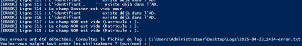
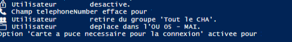

Gestion Automatisée du Cycle de Vie AD
Analyse, conception et déploiement d'une solution PowerShell pour l'automatisation des flux d'utilisateurs au sein du Groupe Hospitalier Artois-Ternois.
01. La Problématique
Avant mon intervention, la création des comptes s'effectuait manuellement via l'interface graphique ADUC. Cette méthode présentait des risques d'erreurs de saisie, des délais de traitement longs et un manque de suivi sur la désactivation des comptes en fin de contrat.
L'objectif était donc d'industrialiser ce processus pour garantir l'intégrité de l'annuaire hospitalier.
Risque identifié : Intégrité des données
02. Vérification et Intégrité des Données
Pour éviter l'importation de données erronées, j'ai intégré une étape de validation stricte via des Regex. Cela permet de vérifier que le matricule extrait du CSV respecte le format interne (ex: une lettre suivie de six chiffres).
Contrôle de conformité
if ($user.Matricule -notmatch "^[A-Z]{1}[0-9]{6}$") {
Write-Error "Format Matricule Invalide : $($user.Matricule)"
}
Le script génère un log détaillé permettant d'identifier immédiatement quelle ligne du fichier CSV pose problème.

03. Processus de Désactivation (Archives)

Hygiène et Sécurité
Le script de nettoyage parcourt l'AD pour identifier les comptes arrivés à expiration. Pour chaque compte expiré, le script effectue les actions suivantes :
- Désactivation du compte utilisateur.
- Déplacement vers l'Unité d'Organisation "Archives".
- Ajout d'une description horodatée sur l'objet AD.